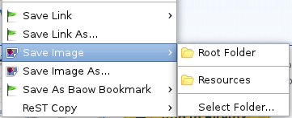

You can add images and files from local directory or web pages.
Add local file:
Click menu Add Image or Add File in left panel, and select your local file or input a file URL.
Save web file:
move mouse on image, and right click , you see this menu:

After done, you can reference it by copy ReST text within pop up menu or property dialog.